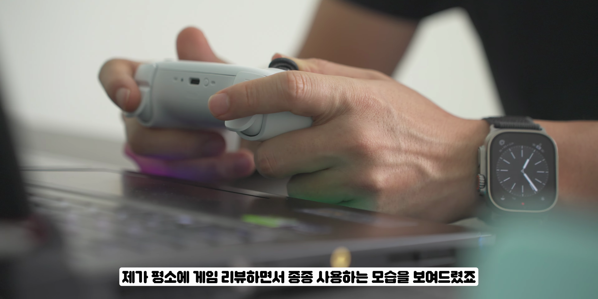
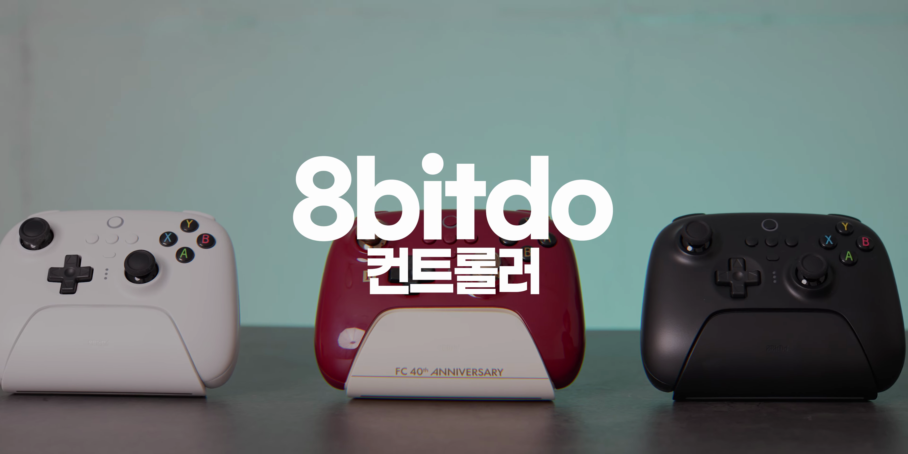
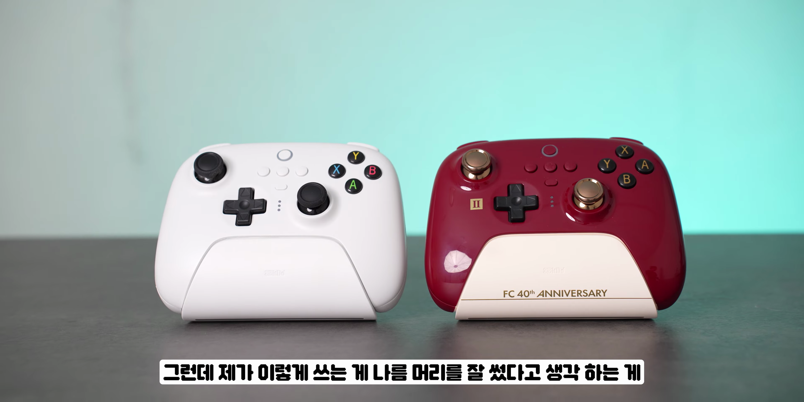
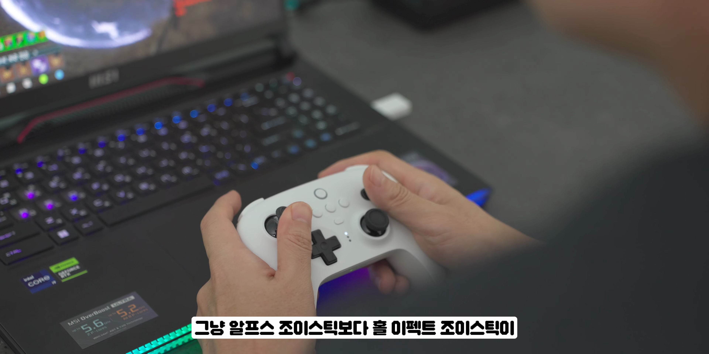
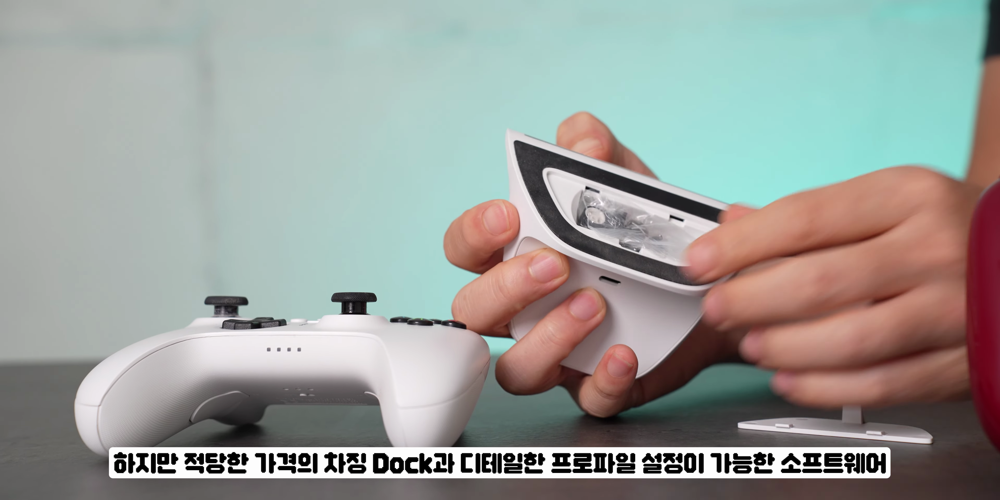

이번 포스팅에서는 최신 게임 컨트롤러에 대한 깊이 있는 리뷰를 제공합니다. 여러 기능과 차별점을 고려해 블루투스와 2.4G 모델의 특성을 비교하고, 실제 게임 플레이를 통해 느낀 점을 공유하겠습니다.
게임 리뷰를 위한 조이스틱 소개
- 게임 리뷰를 위해 사용하는 조이스틱 소개
- 기존 제품과 새로운 제품 비교
- 블루투스 및 2.4G 모델의 차별점
이번 포스팅에서는 게임 리뷰와 관련하여 사용 중인 조이스틱을 소개하겠습니다. 블루투스 및 2.4G 모델의 차이가 무엇인지, 기존 제품과의 비교를 통해 알아보겠습니다.

블루투스와 2.4G 모델의 특성
- 블루투스 모델의 장점
- 닌텐도 스위치 호환성
- 모션 센서 내장
블루투스 모델은 윈도우 10과 닌텐도 스위치에 사용할 수 있도록 모션 센서가 내장되어 있어 다양한 게임 환경에서 활용 가능합니다.

버튼 배열 및 사용성
- 엑스박스 패드와 동일한 버튼 배열
- 게임에 따라 헷갈림
- 개인적인 버튼 배열 커스터마이즈
버튼 배열이 엑스박스 패드와 동일하여 사용 편의성이 높습니다. 하지만 개인적으로 맞춤 설정이 필요할 수 있습니다.
조이스틱 기술 차이
- 홀 이펙트 조이스틱의 기술적 장점
- 알프스 조이스틱과의 비교
- 내구성 및 성능 차이
홀 이펙트 조이스틱은 알프스 조이스틱에 비해 더 나은 내구성과 세밀한 움직임을 제공합니다. 이를 통해 사용 중 마모가 없이 오랜 사용이 가능하다는 장점이 있습니다.

전략적 게임 플레이
- 백 버튼 활용의 장점
- 디아블로 4에서의 경험
- 스킬 타이밍 조절의 용이함
디아블로 4에서 백 버튼을 통해 스킬 쿨타임을 조정하는 방식은 게임 플레이의 편리함을 극대화하며, 이전에 비해 손가락의 피로도가 크게 줄어들었습니다.

최신 한정판 컨트롤러
- 패미컴 40주년 기념 컨트롤러
- 고급스러운 디자인
- 사용 가능성과 성능
패미컴 40주년 기념 컨트롤러는 고급스러운 디자인과 함께 기존 블루투스 모델과 동일한 성능을 제공합니다. 이 특별한 제품은 단순한 외형뿐 아니라 기능성에서도 뛰어납니다.

결론 및 추천
- 적절한 가격과 기능의 조화
- 게임 환경에 따른 제품 선택
- 소프트웨어의 유용성
적절한 가격과 뛰어난 기능을 갖춘 최신 게임 컨트롤러를 통해 여러분의 게임 경험을 한층 더 향상시켜 보시기 바랍니다. 기능과 성능을 모두 고려한 선택이 중요합니다.
Tags: #게임controller #블루투스조이스틱 #디아블로4 #패미컴40주년 #홀 이펙트 조이스틱 #게임review #게임의상 #엑스박스패드